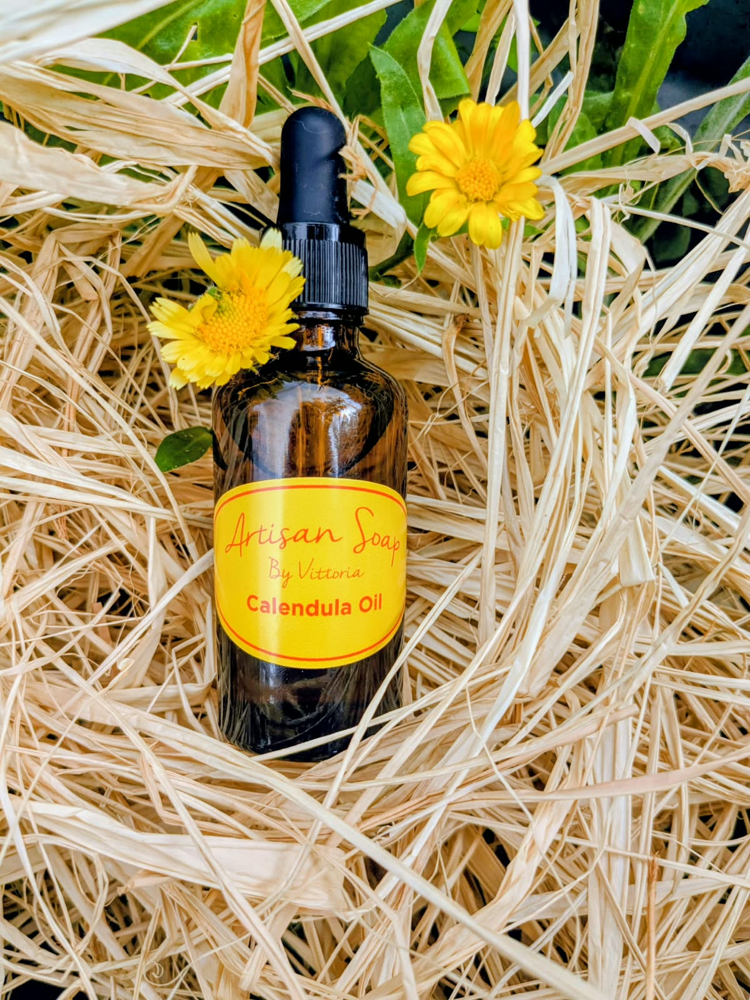
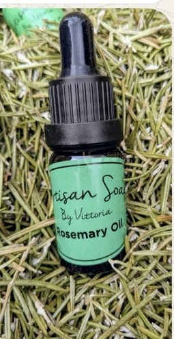
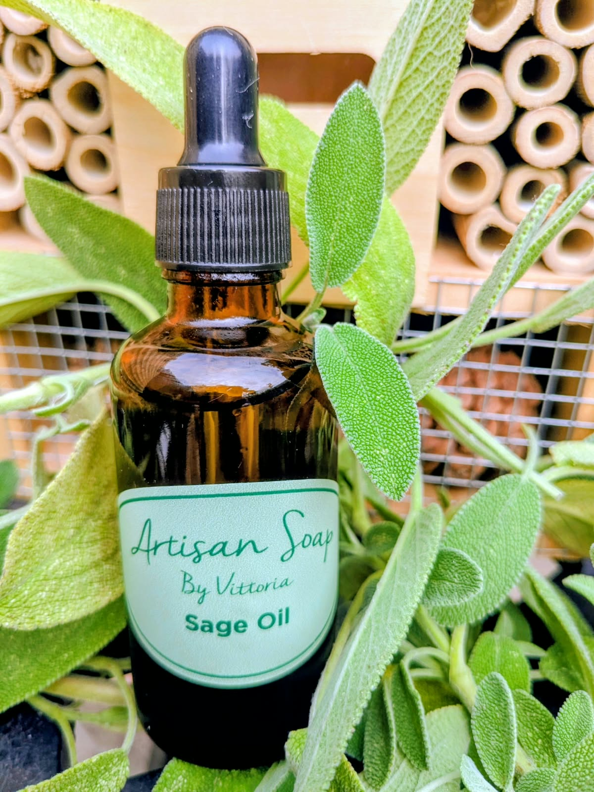
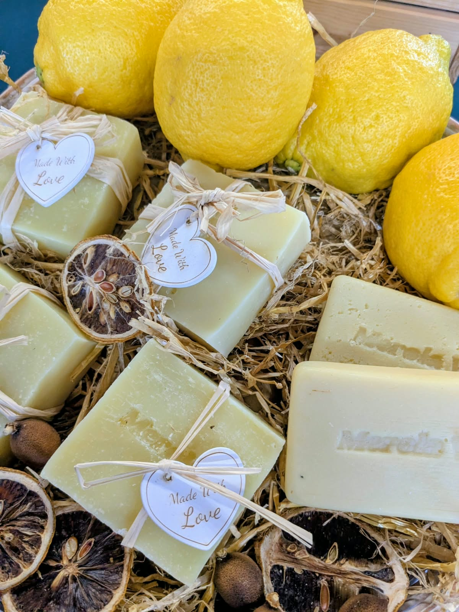
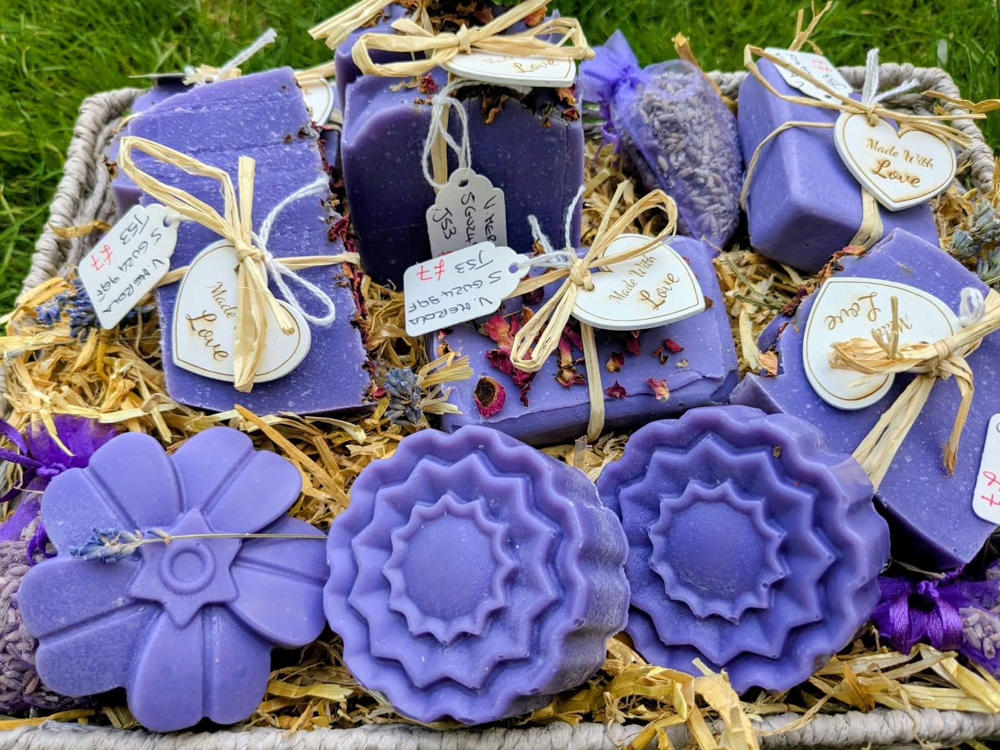
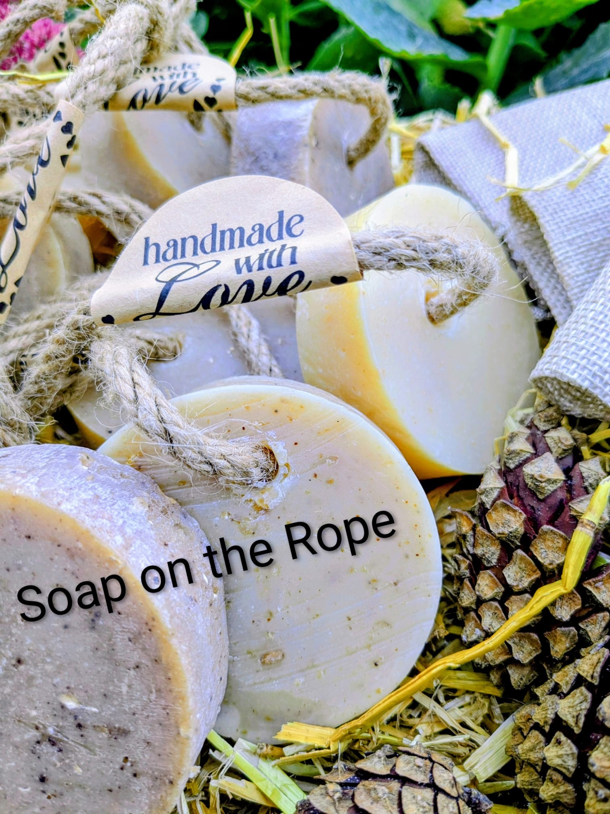

ORGANIC
Calendula Oil
Calendula petals infused into organic almond carrier oil. A gentle botanical addition to face and body care.
20ml £10 · 50ml £20
View Calendula Oil →HANDMADE · BOTANICAL · VEGAN
Small-batch botanical oils and handmade soaps, created with care by Vicky.

THE OIL COLLECTION
Each oil is handmade and presented in 20ml and 50ml sizes. To order, contact Vicky directly by WhatsApp, phone or email.
ORGANIC
Calendula petals infused into organic almond carrier oil. A gentle botanical addition to face and body care.
20ml £10 · 50ml £20
View Calendula Oil →
ORGANIC
Rosemary plants and flowers grown in the organic garden, infused into organic almond carrier oil.
20ml £10 · 50ml £20
View Rosemary Oil →
ORGANIC
A botanical oil presented with fresh sage. The product name is supplied by Vicky; detailed lemongrass-specific information will be added when confirmed.
20ml £10 · 50ml £20
View Sage & Lemongrass Oil →HANDMADE WITH CARE
Explore five handmade soap varieties, with individual bars at £7 or 3 for £18.

Brightening & refreshing.

Calming & soothing.

OUR STORY
Merola V. Nature to Skin is built around a love of plants, handmade making and simple everyday skincare. The oils are made with plants grown in an organic garden and infused into organic almond carrier oil.
Our handmade soap collection is dedicated to beloved parents and to Uncle Franco, whose love of cultivating and propagating plants helped inspire the work.
Homegrown and handmade in Surrey.
THE MEROLA V. PROMISE
Made in small batches with care.
The featured oils are suitable for vegans.
The product information supplied states no animal testing.
The featured oils are described as free from parabens, sulphates, petrochemicals, artificial fragrance and colour.
KIND WORDS
“My skin texture has improved dramatically.”
Customer feedback“The soap doesn’t dry my skin… creamy and not drying.”
Customer feedback“A few drops make the skin immediately soft.”
Customer feedbackORDER & CONTACT
There is no online checkout yet. Simply contact Vicky and she’ll arrange your order, delivery or collection.